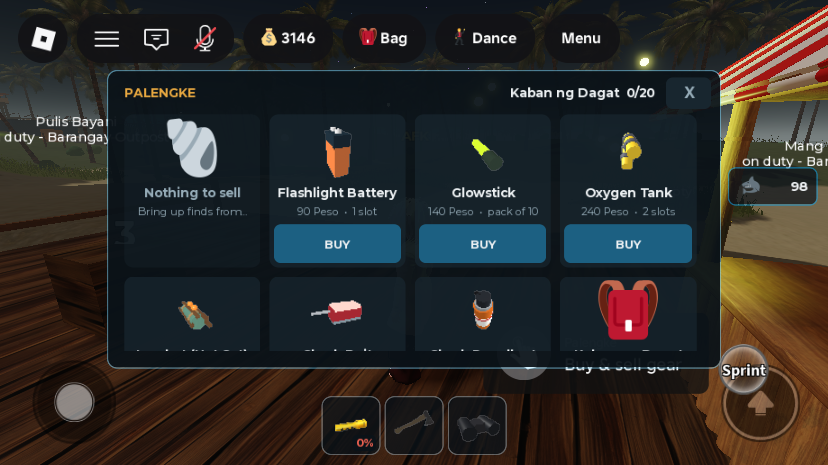

Phases C + D: Palengke and bag as picture cards everywhere; breaking into an unminded tolda
What was asked
- Item 8 — "the bag and palengke item UI update is not applied, wider and change from list view to tile view so it will be mobile friendly".
- Item 9 — "a tolda is same as bodega, player can break and steal it, but no police will arrive since it is not allowed to sell to player, but other player can only break it when the seller is not around or forget to close it, it have like 10 hit to break".
- Item 10 — a better tolda asset "in future", with more assets payable by gamepass. That is future work and nothing was built for it. The current tent is procedural primitives in
BlackMarketService.buildTentand the tool isServerStorage.ItemAssets.ToldaTool. A premium variant could follow the bodega's tier pattern (ItemConfig.BodegaTiers).
1. Picture cards, on every device (item 8)
Why it looked "not applied": the bag already had a card grid, but only when UserInputService.TouchEnabled was true, so anyone looking on a PC saw the old list. The Palengke was always a list. Now both are cards everywhere, and wide.
GearHud:TILE = true(it wasTOUCH). The bag, bodega and Palengke panels are all card grids up to 640 studs wide (or the screen width minus 40), fitting 2–6 cards to a row. The Close button sits in the header as an X.- Palengke cards: each shop item shows its model (from
ItemIcons), its name, "price • slots", and one full-width BUY. The sell counter, bag upgrade and the two pass items have no model, so they show a big symbol instead (🐚, 🎒, ⭐) through the newglyphargument ofmakeCard/cell. The new helpersoleButtongives a card with one action a full-width button. - Small fix on the way: half-slot items were listed as "0 slot" (
%dof 0.5). Shark Bait and Shark Repellent now read "0.5 slot" (%g).
- The card panel now keeps clear of StatusHud's column on the right, and the same width on the left so it stays centred (
SIDE_RESERVE= row width + 18). On the 736×414 test screen that gives 4 cards to a row, 121 wide. The first version, 640 wide, ran under the counter column.

2. Breaking into an unminded tolda (item 9)
- The axe's
Swingnow looks for the nearest bodega or tolda that is not yours (Toldasmodels carry a newOwnerIdattribute) and sends the hit on the matching remote. newRemotes.RequestToldaHit. BlackMarketServicedecides everything. The attacker must have the Axe equipped, be alive, and be withinItemConfig.Bodega.AxeReachof the stall's edge, with one hit perItemConfig.Bodega.HitCooldown. The stall is only breakable while the owner is not minding it: more than 26 studs away (WANTED_RANGE) or offline. Otherwise: "The owner is right there. Wait till they wander off."ItemConfig.ToldaBreakHits = 10hits. Each hit updates the sign ("BEING BROKEN INTO 3/10") and interrupts a pack-up, and the owner is warned at most every 10 s. On the tenth, every listing spills on the ground as pickups (the sameScatterItemsthe bodega uses: gear and finds), the tent is gone, and both sides are told.- No police: unlike a bodega hit, a tolda hit never calls
ReportCrime. (The ronda in Phase F still warns anyone it sees holding an axe, whatever they are doing with it.)
3. Bug fixed: pitching a tolda stopped half way
attachReportPrompt was declared local function after the pitch handler that calls it, and unlike attachSeizePrompt it was not forward-declared. So the call resolved to a nil global and errored every time a stall was pitched: no Report prompt, no "Tolda pitched" message, and no stock panel. It is now forward-declared with the others.
All changes
| Path | What | |
|---|---|---|
| edited | StarterPlayerScripts.GearHud | TILE = true; Palengke built as cards; makeCard/cell glyph; soleButton; %g slots |
| edited | ServerScriptService.BlackMarketService | break-in (ownerMinding, breakOpen, RequestToldaHit handler), sign state, OwnerId on the model, report-prompt fix |
| edited | StarterPack.Axe.Swing | targets toldas as well as bodegas |
| edited | ReplicatedStorage.ItemConfig | ToldaBreakHits = 10 |
| new | ReplicatedStorage.Remotes.RequestToldaHit | RemoteEvent |
How it was tested
- Palengke (playtest, iPhone emulation, standing at the counter): the Shop frame has a
UIGridLayoutand 10 cards: sell, battery, glowstick, O2 tank, lambat, shark bait, shark repellent, bag upgrade, and 2 passes. The panel spans x 96–639 against the counter column's 647–725. Screenshot above. - Pitch fix: after the fix, pitching from the client produced "Tolda pitched. Put things out -- and watch who is watching you." and the stall got its
Report,BrowseandSeizeprompts. Before, the handler errored atattachReportPrompt. - All edited scripts compile (a
loadstringcheck in Edit).
Not verified / known gaps
- The tolda break-in itself is untested: it needs a second player (you cannot hit your own stall). Try it with Test → Clients and Servers: player 1 pitches and walks 27+ studs away, player 2 swings 10 times. Expect "Crack. N more", the sign counting, the owner warned, and stock on the ground on the 10th, with no
Wantedon player 2. Then player 1 comes back mid-way, and the next swing should be refused. - The bag's DALA/BODEGA tabs on desktop now use cards too. They were only glanced at on the phone layout.
- Item 10 (a better tolda asset, gamepass variants) is not started.